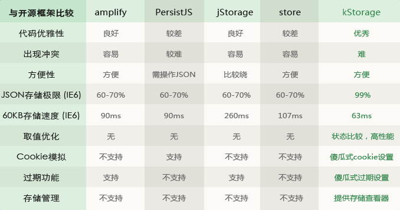

支持IE6+以及其他主流浏览器引用kStorage.full.min.js。
<script src="kStorage.full.min.js" type="text/javascript"></script>
不需要支持IE6-7引用kStorage.min.js。
<script src="kStorage.min.js" type="text/javascript"></script>
便可开始使用
var myStorage = kst.use("myStorage");
myStorage.set("myName", "Jason");
myStorage.get("myName");
kStorage能存储一些内容，但是不能当数据库使用，因为本地存储有大小限制。
| 支持特性 | Firefox | Chrome | IE6,7 | IE8 | IE9 | IE10 |
|---|---|---|---|---|---|---|
| 支持版本 | v3.5+ | v4.0+ | 支持 | 支持 | 支持 | 支持 |
| 最大存储量 (一个字符2B，不区分中英文) |
10.4MB | 5.2MB | 1.0MB 单个数据最大128KB 数据个数不限 |
8.4MB | 14.2MB | 15.8MB |
kStorage是一个优秀的本地存储框架，下面是与几个老外开发的框架的比较。
